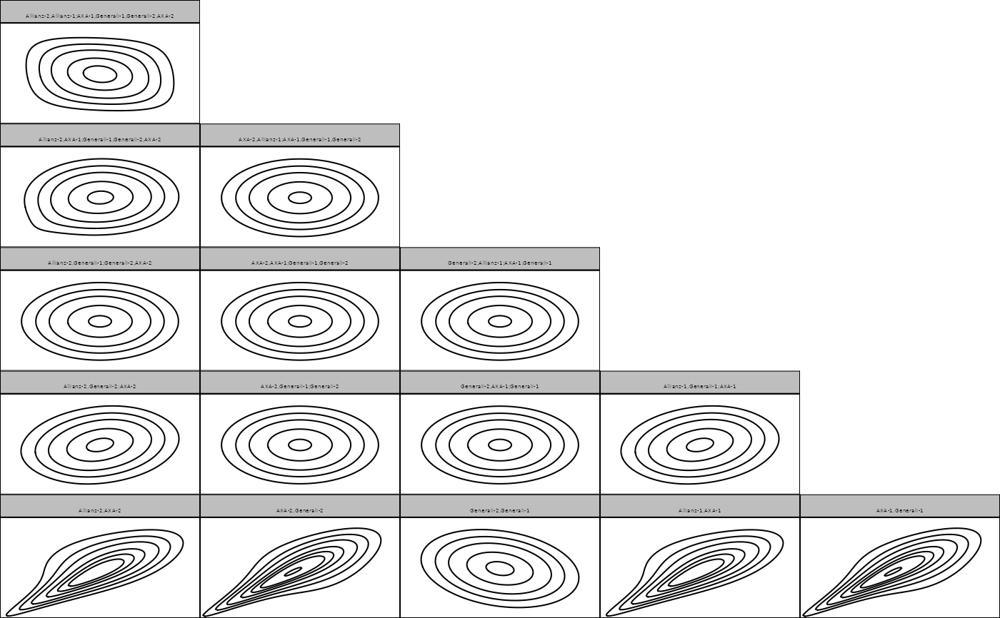

Automated fitting or creation of custom S-vine copula models
svinecop(
data,
p,
var_types = rep("c", NCOL(data)),
family_set = "all",
cs_structure = NA,
out_vertices = NA,
in_vertices = NA,
type = "S",
par_method = "mle",
nonpar_method = "constant",
mult = 1,
selcrit = "aic",
weights = numeric(),
psi0 = 0.9,
presel = TRUE,
trunc_lvl = Inf,
tree_crit = "tau",
threshold = 0,
keep_data = FALSE,
show_trace = FALSE,
cores = 1
)Arguments
- data
a matrix or data.frame (copula data should have approximately uniform margins).
- p
the Markov order.
- var_types
variable types; discrete variables not (yet) allowed.
- family_set
a character vector of families; see
rvinecopulib::bicop()for additional options.- cs_structure
the cross-sectional vine structure (see
rvinecopulib::rvine_structure();cs_structure = NAperforms automatic structure selection.- out_vertices
the out-vertex; if
NA, the out-vertex is selected automatically if no structure is provided, and is equivalent to 1 if a structure is provided.- in_vertices
the in-vertex; if
NA, the in-vertex is selected automatically if no structure is provided, and is equivalent to 1 if a structure is provided.- type
type of stationary vine;
"S"(default) for general S-vines,"D"for Smith's long D-vine,"M"for Beare and Seo's M-vine.- par_method
the estimation method for parametric models, either
"mle"for sequential maximum likelihood,"itau"for inversion of Kendall's tau (only available for one-parameter families and"t".- nonpar_method
the estimation method for nonparametric models, either
"constant"for the standard transformation estimator, or"linear"/"quadratic"for the local-likelihood approximations of order one/two.- mult
multiplier for the smoothing parameters of nonparametric families. Values larger than 1 make the estimate more smooth, values less than 1 less smooth.
- selcrit
criterion for family selection, either
"loglik","aic","bic","mbic". Forvinecop()there is the additional option"mbicv".- weights
optional vector of weights for each observation.
- psi0
prior probability of a non-independence copula (only used for
selcrit = "mbic"andselcrit = "mbicv").- presel
whether the family set should be thinned out according to symmetry characteristics of the data.
- trunc_lvl
currently unsupported.
- tree_crit
the criterion for tree selection, one of
"tau","rho","hoeffd", or"mcor"for Kendall's \(\tau\), Spearman's \(\rho\), Hoeffding's \(D\), and maximum correlation, respectively.- threshold
for thresholded vine copulas;
NAindicates that the threshold should be selected automatically byrvinecopulib::mBICV().- keep_data
whether the data should be stored (necessary for using
fitted()).- show_trace
logical; whether a trace of the fitting progress should be printed.
- cores
number of cores to use; if more than 1, estimation of pair copulas within a tree is done in parallel.
Value
Returns the fitted model as an object with classes
svinecop and svinecop_dist. Also inherits from vinecop, vinecop_dist
such that many functions from rvinecopulib can be called.
Examples
# load data set
data(returns)
# convert to pseudo observations with empirical cdf for marginal distributions
u <- pseudo_obs(returns[1:100, 1:3])
# fit parametric S-vine copula model with Markov order 1
fit <- svinecop(u, p = 1, family_set = "parametric")
fit
#> 3-dimensional S-vine copula model of order p = 1 ('svinecop_dist')
summary(fit)
#> # A data.frame: 12 x 10
#> tree edge conditioned conditioning var_types family rotation parameters df
#> 1 1 6, 3 c,c gaussian 0 -0.24 1
#> 1 2 1, 2 c,c t 0 0.72, 2.97 2
#> 1 3 2, 3 c,c t 0 0.77, 3.22 2
#> 2 1 5, 3 6 c,c indep 0 0
#> 2 2 6, 2 3 c,c indep 0 0
#> 2 3 1, 3 2 c,c frank 0 1.2 1
#> 3 1 4, 3 6, 5 c,c indep 0 0
#> 3 2 5, 2 3, 6 c,c joe 0 1.1 1
#> 3 3 6, 1 2, 3 c,c indep 0 0
#> 4 1 4, 2 3, 6, 5 c,c indep 0 0
#> tau
#> -0.15
#> 0.51
#> 0.56
#> 0.00
#> 0.00
#> 0.13
#> 0.00
#> 0.04
#> 0.00
#> 0.00
#> # ... with 2 more rows
plot(fit)
contour(fit)

logLik(fit)
#> [1] 87.19237
#> attr(,"df")
#> [1] 8
pairs(svinecop_sim(500, rep = 1, fit))